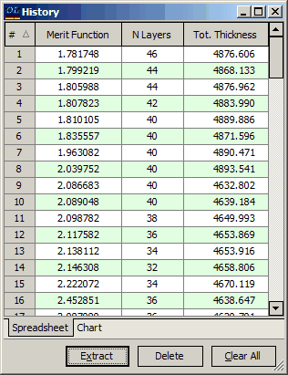
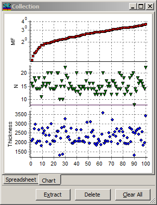
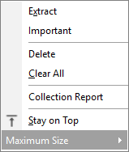

Collection
Collection
Navigation: OptiLayer Menu Commands > View Menu >
Collection
` <idh_history.html>`__ ` <idh_menu_view.html>`__ ` <memorizeplots.html>`__
The Collection window displays a list of the best designs obtained using the Random Optimization procedure. You can replace the design in memory with any design from the Collection, which can then be used as a starting design for another design procedure.
The best designs in the Collection are identified by their merit function values. Other important design parameters, such as the number of layers and design total thickness, are also shown in the Collection window alongside the merit function values. Up to 50 best designs can be stored in the Collection, and the designs are ordered according to their merit function values.

The “Chart” tab of the Collection window allows you to view the major design parameters of all stored designs in graphical representation.

Graphical representation makes the Random Optimization procedure flow much more informative.
To replace the design in memory with a design from the Collection, select the design you want and click the Extract button.
Press the Delete button to remove the selected design from the Collection database. It is possible to select more than one design by using Ctrl+Left mouse click or simply pressing the left mouse button and dragging to create a selection area. If multiple designs are selected, the Delete button will delete them in one operation.
Press the Clear button to remove all designs from the Collection.
These commands are also accessible through the right-click popup menu:

You can mark certain designs as important using the “Important” designation, ensuring that they are not excluded from the Collection during computations.
The “Stay on Top” command in the additional popup menu instructs the Collection window to always remain on top of other windows.
You can generate a text report on all designs stored in the collection database by using the “Collection Report” command in the Results menu.